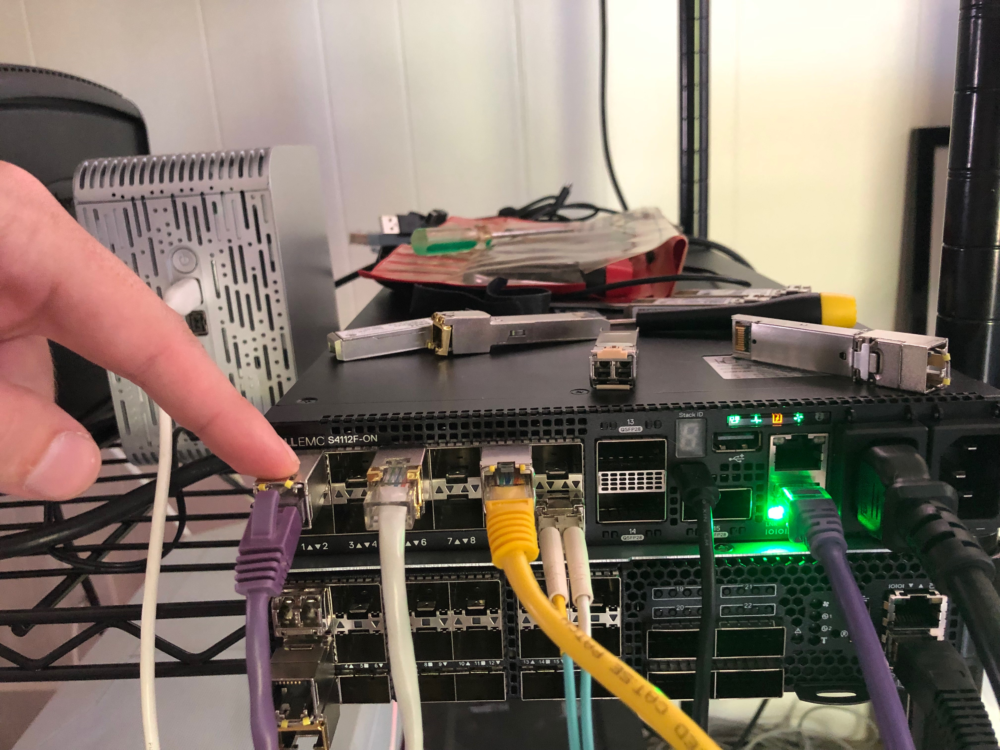

Load Balancing with LAG OPX
In this test case the goal is to create a simple packet broker using a reverse LAG port.
Helpful Links
ONIE Network Install Process Overview
OPX Install Instructions for Dell EMC Equipment
Helpful Debug Commands
cps_get_oid.py -qua target base-switch/switching-entities/switching-entity
cps_model_info base-switch/switching-entities/switching-entity
cps_set_oid.py -qua target base-switch/switching-entities/switching-entity name=lag-hash-fields attr=src-ip,dest-ip,l4-dest-port,l4-src-port,ip-protocol
My Configuration
General Configuration
- ONIE host is running RHEL 8
- I am using a Dell S4112F-ON for testing
- OpenSwitch version PKGS_OPX-3.2.0-installer-x86_64
- PFSense running DNS and DHCP as services
RHEL Release Info
NAME="Red Hat Enterprise Linux"
VERSION="8.0 (Ootpa)"
ID="rhel"
ID_LIKE="fedora"
VERSION_ID="8.0"
PLATFORM_ID="platform:el8"
PRETTY_NAME="Red Hat Enterprise Linux 8.0 (Ootpa)"
ANSI_COLOR="0;31"
CPE_NAME="cpe:/o:redhat:enterprise_linux:8.0:GA"
HOME_URL="https://www.redhat.com/"
BUG_REPORT_URL="https://bugzilla.redhat.com/"
REDHAT_BUGZILLA_PRODUCT="Red Hat Enterprise Linux 8"
REDHAT_BUGZILLA_PRODUCT_VERSION=8.0
REDHAT_SUPPORT_PRODUCT="Red Hat Enterprise Linux"
REDHAT_SUPPORT_PRODUCT_VERSION="8.0"
Red Hat Enterprise Linux release 8.0 (Ootpa)
Red Hat Enterprise Linux release 8.0 (Ootpa)
OPX Version
OS_NAME="OPX"
OS_VERSION="unstable"
PLATFORM="S4112F-ON"
ARCHITECTURE="x86_64"
INTERNAL_BUILD_ID="OpenSwitch blueprint for Dell 1.0.0"
BUILD_VERSION="unstable.0-stretch"
BUILD_DATE="2019-06-21T19:04:22+0000"
INSTALL_DATE="2019-10-23T23:16:10+00:00"
SYSTEM_UPTIME= 1 day, 5 minutes
SYSTEM_STATE= running
UPGRADED_PACKAGES=no
ALTERED_PACKAGES=yes
Wasn't sure why I got the unstable version after installation. It didn't cause any problems for testing so I just left it as is.
Setup ONIE Prerequisites
See ONIE Install Setup for instructions.
Configure Device for Reverse LAG
Physical Configuration
I used the following SFPs
- 1, 1Gb/s copper SFP (e101-001-0) for input
- 2, 1Gb/s copper SFPs (e101-005-0/e101-009-0) and 1, 10Gb/s, fiber SFP (e101-012-0) for output
Input Port

Output Ports

LAG Configuration
Enable LAG Ports and Input Port
root@OPX:~# ip link set e101-001-0 up
root@OPX:~# ip link set e101-005-0 up
root@OPX:~# ip link set e101-009-0 up
root@OPX:~# ip link set e101-012-0 up
root@OPX:~# opx-show-interface --summary
Port | Enabled | Operational status | Supported speed
-----------------------------------------------------------
e101-001-0 | yes | up | 1G 10G
e101-002-0 | no | down | 1G 10G
e101-003-0 | no | down | 1G 10G
e101-004-0 | no | down | 1G 10G
e101-005-0 | yes | up | 1G 10G
e101-006-0 | no | down | 1G 10G
e101-007-0 | no | down | 1G 10G
e101-008-0 | no | down | 1G 10G
e101-009-0 | yes | up | 1G 10G
e101-010-0 | no | down | 1G 10G
e101-011-0 | no | down | 1G 10G
e101-012-0 | yes | up | 1G 10G
e101-013-0 | no | down | 100G
e101-014-0 | no | down | 100G
e101-015-0 | no | down | 100G
eth0 | yes | UNKNOWN | UNKNOWN
Configure LAG
Configure LAG Algorithm
You can see the switch's global paramters with the opx-show-global-switch command:
root@OPX:~# opx-show-global-switch
Switch id 0
ACL entry max priority: 2147483647
ACL entry min priority: 0
ACL table max priority: 11
ACL table min priority: 0
Bridge table size: 147456
BST enable: off
BST tracking mode: current
Counter refresh interval: 5 s
Default mac address: 88:6f:d4:98:b7:80
ECMP group size: 256
ECMP hash algorithm: crc
ECMP hash seed value: 0
Egress buffer pool num: 4
Ingress buffer pool num: 4
IPv6 extended prefix routes: 0
IPv6 extended prefix routes lpm block size: 1024
L3 nexthop table size: 32768
LAG hash algorithm: crc
LAG hash seed value: 0
MAC address aging timer: 1800 s
Max ECMP entries per group: 0
Max IPv6 extended prefix routes: 3072
Max MTU: 9216
Max VXLAN overlay nexthops: 4096
Max VXLAN overlay rifs: 2048
Number of multicast queues per port: 10
Number of queues cpu port: 43
Number of queues per port: 20
Number of unicast queues per port: 10
QoS rate adjust: 0
RIF table size: 12288
Switch mode: store and forward
Temperature: 49 deg. C
Total buffer size: 12188
UFT mode: default
UFT host table size: 135168
UFT L2 mac table size: 147456
UFT L3 route table size: 16384
VXLAN riot enable: on
If you want to change the hash algorithm you can do so with opx-config-global-switch --lag-hash-alg <crc | random | xor>
I went ahead and left mine are CRC. This article from Dell can be helpful in deciding.
Configure LAG Fields
More imporantly you will probably want to configure what fields are used to determine the hash. The options are:
- src-mac: The source MAC address of the frame
- dest-mac: The destination MAC of the frame
- vlan-id: The VLAN ID listed in the frame
- ethertype: The ethertype of the frame
- ip-protocol: The IP protocol field in the IPv4 header
- src-ip: The packet source IP
- dest-ip: The destination IP of the packet
- l4-dest-port: The destination port of the segment
- l4-src-port: The source port of the segment
- in-port: The port from which the packet entered. It is unlikely you would want to use this for a reverse LAG
I will use a standard 5-tuple configuration (src/dst IP, src/dest port, protocol #)
Create LAG
opx-config-lag create --name reverse_lag --unblockedports e101-005-0,e101-009-0,e101-012-0 --enable
Results
I wasn't able to complete the config. There is a bug in OPX preventing you from being able to set the fields on which the LAG will hash. I spent about a day working my way through the problem. See current status on this bug ticket